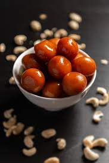
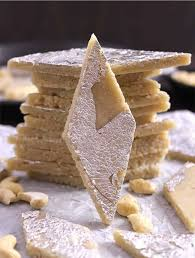

Gulab Jamun
Ingredients
- Sugar
- Maida
- Milk
- Ghee
- khoya
Process
- Take the grated Khoya and maida in a medium size deep bowl.
- Combine them thoroughly but gently using a spoon.
- Add a teaspoon of milk to it and knead all of them together to make a smooth and soft dough.
- Now heat ghee in a pan over medium flame and add the Jamun balls to deep-fry them. Cook evenly until it becomes golden brown.

Kaju Katli
Ingredients
- 1 1/2 cup powdered cashews.
- 1 cup sugar.
- 1/2 cup water.
- 4 inches silver vark.
- 1 1/2 tablespoon ghee.
- 1 teaspoon powdered green cardamom.
Process
- Choose fresh and whole cashews to ensure the best flavour and texture of your Kaju Katli.
- Make sure not to over-grind, as this can release the oils from the nuts and affect the texture of the final product.
- When using condensed milk, make sure to cook the cashew mixture on low heat. Stir continuously to prevent it from sticking to the bottom of the pan and burning.
- Roll out the dough evenly into a thin layer using a greased rolling pin. Cut the Kaju Katli into diamond or square-shaped pieces while it is still warm.
